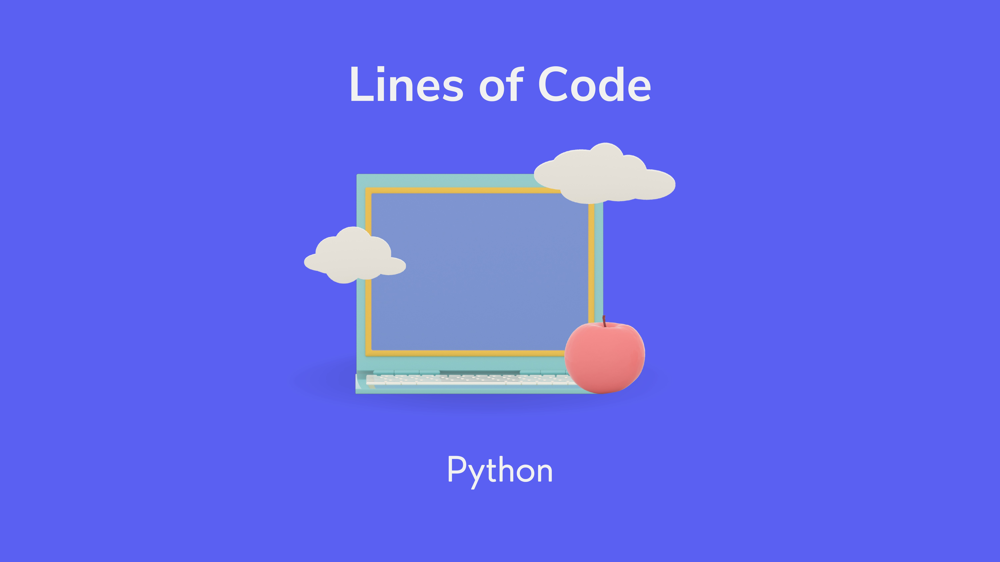

Problem Solver!
Timetable Generator
Languages and Libraries Used:
The program is a simple Streamlit web application that generates a timetable based on user inputs. It allows the user to specify the number of subjects they want to include in the timetable, along with the number of hours per week for each subject. The program then generates a timetable that allocates these subjects to different time slots throughout the week.
Description of the Program:
- Python: The entire program is written in Python, making use of its simplicity and readability.
- Streamlit: Streamlit is a Python library that allows developers to create web applications for data science and machine learning projects quickly. It simplifies the process of converting data scripts into interactive web applications.
- Numpy : is a powerful library for numerical computing in Python. It is used here to manage arrays and data structures efficiently, particularly for handling the timetable matrix.
